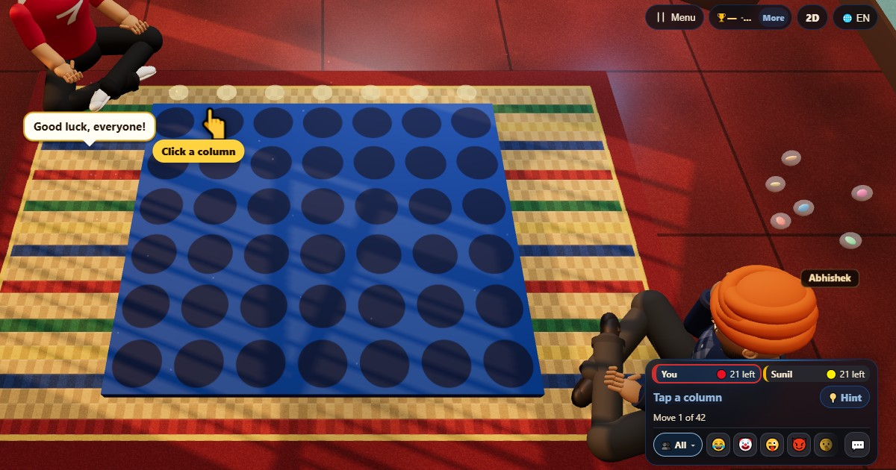

چار کی قطار (Four in a Row)
- 👥 2 کھلاڑی
- بورڈ گیمز
- 🆓
اردو گائیڈ
گوٹیاں گرائیں اور پہلے چار ایک لائن میں لائیں۔
English name: Four in a Row

کیسے کھیلیں
- باری باری ہر کھلاڑی کسی بھی خالی جگہ والے کالم میں ایک ٹکیہ گراتا ہے۔
- ٹکیہ اس کالم کی سب سے نیچی خالی جگہ تک گرتی ہے۔
- اپنی چار ٹکیاں سیدھی، کھڑی یا ترچھی قطار میں لائیں اور فوراً جیت جائیں۔
پوائنٹس کیسے ملتے ہیں
کھیل جیت یا برابری پر ختم ہوتا ہے۔ نتیجے میں جیتنے والے کو 1۔
کون جیتتا ہے
پہلی چار کی قطار جیتتی ہے۔ جال بھر جائے اور قطار نہ بنے تو برابری۔
اکثر پوچھے جانے والے سوالات
پہلے کون چلتا ہے؟
میز پر پہلا کھلاڑی۔ پہلے چلنا فائدے کا ہے، اس لیے کئی کھیلوں میں باری باری شروع کریں۔
کیا جال عام سائز کا ہے؟
ہاں: سات کالم اور چھ قطاریں۔
کیسے کھیلیں
- مہمان کے طور پر: نہ رجسٹریشن نہ لاگ اِن۔ نام چنیں اور فوراً کھیلیں۔
- کمپیوٹر کے ساتھ: کوئی نہ ہو تو خالی جگہیں کمپیوٹر کھلاڑی بھر دیتے ہیں۔ آسان، نارمل یا مشکل۔
- آن لائن: دنیا بھر کے کھلاڑیوں والی کھلی میز پر بیٹھیں۔
- قریب کے دوستوں کے ساتھ: ایک فون پر گیم شروع کریں اور کوڈ یا QR کوڈ بھیجیں۔ دوست اپنے فون سے شامل ہو جاتے ہیں۔
- ایک فون پر: باری باری فون آگے بڑھائیں: پورے گھر کے لیے ایک فون کافی ہے۔
دوسری زبانیں
- हिन्दी: चार एक लाइन में
- Hinglish: Four in a Row
- Español: Cuatro en raya
- Português: Quatro em linha
- Français: Quatre en ligne
- Deutsch: Vier in einer Reihe
- Bahasa Indonesia: Empat Sejajar
- Türkçe: Dörtlü Sıra
- Italiano: Quattro in fila
- 日本語: 四目並べ
- 한국어: 사목 (커넥트 포)
- 中文: 四子棋
- Русский: Четыре в ряд
- नेपाली: लाइनमा चार
- বাংলা: চার সারি
- English: Four in a Row · مکمل اصول (انگریزی)
کھیلوں کے آئیڈیاز
تمام گیمز


ChitPlay میں اصلی پیسے، شرط یا انعام نہیں ہیں۔ پوائنٹس کی کوئی قیمت نہیں۔